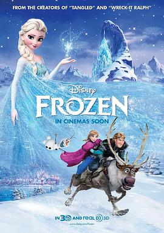

冰雪奇缘 / Frozen
又名：魔雪奇缘(港) / 冰雪大冒险 / 冰雪皇后 / 白雪皇后 / 冰雪女王 / 冰冻公主
作品信息
| 导演 | 克里斯·巴克 / 珍妮弗·李 |
| 编剧 | 珍妮弗·李 / 克里斯·巴克 / 夏恩·莫里斯 |
| 主演 | 克里斯汀·贝尔 / 伊迪娜·门泽尔 / 乔纳森·格罗夫 / 乔什·加德 / 圣蒂诺·方塔纳 / 艾伦·图代克 / 塞伦·希德 / 克里斯·威廉姆斯 / 斯蒂芬·安德森 / 玛雅·威尔逊 / 伊迪·麦克勒格 / 罗伯特·派恩 / 莫里斯·拉马奇 / 珍妮弗·李 / 莉薇·施图本劳赫 / 伊娃·贝拉 / 斯宾塞·莱西·加纳斯 / 泰里·布朗 / 杰西·科尔蒂 / 杰夫·马库斯 / 塔克·吉莫尔 / 保罗·布里格斯 |
| 类型 | 喜剧 / 动画 / 歌舞 / 奇幻 |
| 制片国家/地区 | 美国 |
| 语言 | 英语 / 冰岛语 |
| 上映日期 | 2014-02-05(中国大陆) / 2013-11-27(美国) |
| 片长 | 102分钟 |
| IMDb | tt2294629 |
最后一次看到是 2026-10-07T23:14:43+08:00 · 豆瓣原页